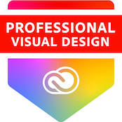
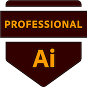

In corso
I.I.S. “Archimede”
Modica (RG)
2024 — Oggi
Docente C.D.C. B022 · Tempo Indeterminato
Docenza in Laboratorio di tecnologie e tecniche delle comunicazioni multimediali, con immissione in ruolo dal 2025.
Visual Designer · Graphic Designer
Ciao, sono Giorgio La Manna. Progetto marchi, locandine, sistemi editoriali e infografiche, partendo dal concept e arrivando al segno grafico. Mi muovo tra ricerca tipografica, illustrazione e visual storytelling per dare forma a comunicazioni precise e personali.
Sono un visual designer con una sensibilità per il dettaglio tipografico e il sistema visivo. Affronto ogni progetto come un piccolo problema da risolvere: ascolto, ricerco, traccio, semplifico.
Affianco la pratica progettuale al ruolo di docente di Laboratorio di tecnologie e tecniche delle comunicazioni multimediali (C.D.C. B022) negli istituti tecnici, dove ogni giorno condivido strumenti, metodi e cultura del design con i miei studenti. Lavoro su brand identity, locandine, infografiche e progetti editoriali: mi piace il momento in cui un’idea trova la sua forma essenziale, e il segno grafico inizia a parlare da solo.


Esperienze professionali come docente di Laboratorio di tecnologie e tecniche delle comunicazioni multimediali (Classe di concorso B022) negli istituti tecnici e professionali italiani.
Modica (RG)
2024 — Oggi
Docente C.D.C. B022 · Tempo Indeterminato
Docenza in Laboratorio di tecnologie e tecniche delle comunicazioni multimediali, con immissione in ruolo dal 2025.
Varese (VA)
2024
Docente C.D.C. B022 · Tempo Determinato
Incarico breve di docenza (8/18h) prima del trasferimento in Sicilia.
Caltanissetta (CL)
2021 — 2024
Docente C.D.C. B022 · Tutor P.C.T.O.
Tre anni accademici di docenza in laboratorio multimediale, con incarichi paralleli come Tutor P.C.T.O. per le classi del triennio.
Una selezione di progetti recenti. Clicca su un lavoro per scoprire il concept progettuale.
Hai un’idea, un progetto, un brand da far nascere o da rinfrescare? Scrivimi due righe: leggo ogni messaggio e rispondo entro pochi giorni.